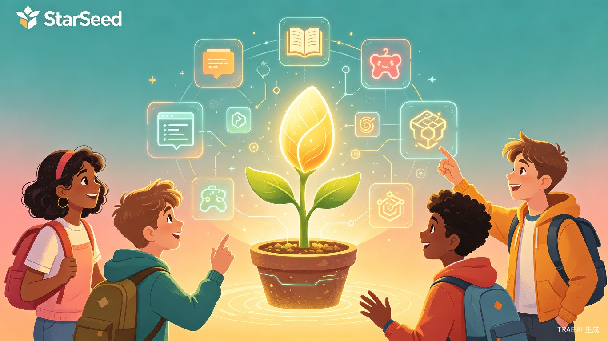
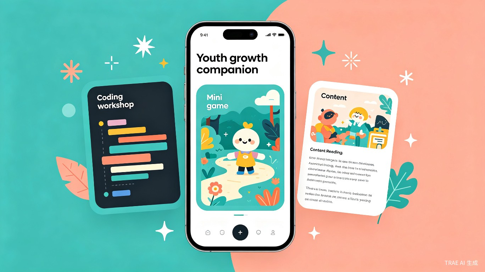
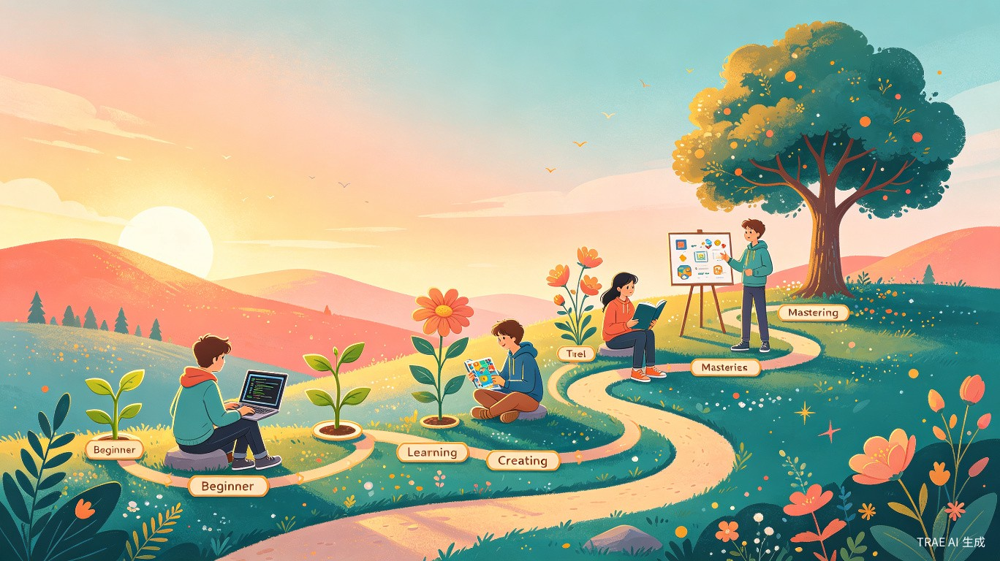

项目概述
中国 10-18 岁青少年群体超过 1.5 亿，他们正处在认知发展、兴趣探索和自我认同的关键阶段。然而，当前面向青少年的数字产品普遍存在两个极端：要么过于"功利"，以刷题提分为唯一目标；要么过于"娱乐"，缺乏成长引导。青少年真正需要的是一款懂他们、陪伴他们、激发他们的产品。
星芽 StarSeed 正是为此而生。它不是一个单一功能的工具，而是一个融合三大模块的青少年成长平台：
核心理念：不是"教"青少年学什么，而是"陪"他们探索自己想成为什么样的人。星芽的每一个功能设计，都围绕"自主探索、正向反馈、安全陪伴"三个原则展开。
市场与用户分析
目标用户画像
| 维度 | 初级用户（10-13 岁） | 核心用户（14-16 岁） | 进阶用户（16-18 岁） |
|---|---|---|---|
| 认知特点 | 好奇心强，注意力易分散，依赖具象思维 | 抽象思维发展，开始关注自我认同 | 接近成人思维，追求深度和自主性 |
| 核心需求 | 趣味引导，即时成就感 | 社交认同，技能展示 | 作品输出，升学/职业探索 |
| 使用场景 | 课后 30 分钟碎片时间 | 周末集中创作 1-2 小时 | 项目制学习，长期创作 |
| 内容偏好 | 动画教程、闯关游戏 | 同龄人作品、互动挑战 | 开源项目、深度文章 |
市场痛点
编程教育门槛高
现有编程工具要么过于专业（如 VS Code），要么过于玩具化（如 Scratch），缺乏从入门到进阶的平滑过渡路径。青少年在"玩够了 Scratch"之后往往找不到下一步方向。
游戏与学习割裂
家长视游戏为"洪水猛兽"，青少年却无法抗拒游戏的吸引力。市面上几乎没有真正将游戏机制与学习目标深度融合的产品，大多只是"披着游戏外衣的题库"。
内容质量参差不齐
短视频平台充斥着低质、碎片化的"快餐内容"，青少年缺乏一个安全、高质量的内容社区来获取有价值的信息和启发。
心理健康关注不足
学业压力、社交焦虑、自我认同困惑——青少年的心理需求长期被忽视，很少有产品将心理成长作为核心功能而非附加模块。
市场规模与增长趋势
竞品分析与核心优势
市场上已有一些面向青少年的教育产品，但它们各自只覆盖了青少年成长需求的某一个侧面。星芽的独特之处在于将编程教育、游戏化学习、内容社区和心理健康融为一体，形成完整的成长闭环。
星芽的五大核心优势
三位一体，完整闭环
市面上没有一款产品同时覆盖"创作工具 + 游戏化学习 + 内容社区"三大场景。星芽让青少年在一个平台内完成"学、玩、读、创"的完整成长循环。
AI 陪伴，而非 AI 替代
区别于直接给出答案的 AI 工具，星芽的"小芽"采用苏格拉底式引导，培养青少年独立思考能力，而非制造依赖。
心理健康融入产品基因
不是事后补救，而是从设计之初就将情绪管理、自我认知等心理成长维度嵌入游戏机制和内容推荐中。
渐进式能力成长路径
独创"代码渐变"技术，让积木编程自然过渡到真实代码，解决了 Scratch 用户"毕业即断崖"的行业难题。
防沉迷即产品特色
通过"能量值"机制引导线下活动，将防沉迷从"家长管控"转变为"产品体验"，减少亲子冲突。
隐私优先，安全合规
端到端加密、年龄分级、三重内容审核，严格遵循《未成年人保护法》，通过等保三级认证。
产品设计

模块一：创意工坊
创意工坊是星芽的"创造引擎"。它提供一套渐进式的创作工具链，从零基础到独立开发，让青少年的每一个想法都有机会落地。
核心功能
- 积木式编程：类似 Scratch 的可视化编程，但内置 AI 辅助，当代码逻辑出错时，AI 会以"提示"而非"纠错"的方式引导用户自己发现问题
- 代码渐变模式：随着用户能力提升，积木可以逐步"展开"为真实代码（Python / JavaScript），实现从图形化到文本编程的无缝过渡
- 模板广场：提供小游戏、互动故事、数据可视化等模板，用户可以一键 Fork 并修改，降低创作门槛
- 作品展示墙：每个用户拥有个人主页，展示自己的作品集，同龄人可以点赞、评论和 Remix
设计亮点
- AI 创作伙伴：内置的 AI 助手"小芽"不会直接给出答案，而是通过提问和引导帮助用户理清思路
- 协作创作：支持 2-4 人实时协作编辑，培养团队协作能力
- 作品导出：完成的作品可以导出为独立链接或小程序，分享给朋友和家人
- 能力图谱：系统自动追踪用户掌握的编程概念，生成可视化的能力成长树
模块二：成长冒险
成长冒险不是简单的"教育游戏"，而是一套以角色成长为核心、以能力培养为暗线的游戏化学习系统。玩家在冒险过程中自然地锻炼逻辑思维、情绪管理、团队协作等核心素养。
防沉迷设计：成长冒险采用"能量值"机制，每日能量有限且不可购买，用完后只能通过线下活动（如运动、阅读、社交）"充电"。这不是限制，而是引导青少年平衡线上与线下生活。
模块三：星芽阅读
星芽阅读是一个面向青少年的高质量内容社区，通过 AI 个性化推荐，帮助每位用户发现真正感兴趣的内容，培养深度阅读和独立思考的习惯。
AI 个性化推荐
基于用户的阅读历史、兴趣标签和认知水平，智能推荐科普文章、人物传记、社会观察等高质量内容。推荐算法注重"探索"而非"投喂"，避免信息茧房。
互动式阅读
每篇文章配有思考题、讨论区和延伸阅读链接。用户可以发布读书笔记，与同龄人交流观点。AI 会引导用户从"读了什么"走向"想到了什么"。
青少年创作计划
鼓励用户从"读者"成长为"作者"。提供写作工坊、编辑指导和发表平台，优秀的青少年原创作品可以获得推荐曝光。
内容安全体系
三重内容审核机制：AI 初筛 + 专家复审 + 社区举报。所有内容按年龄分级，确保 10 岁和 17 岁的用户看到的都是适合自己年龄段的内容。
成长体系
星芽的核心不是"教"，而是"陪伴成长"。我们设计了一套完整的成长体系，让青少年在平台上的每一次互动都成为成长的印记。

成长等级
| 等级 | 象征 | 解锁能力 | 典型行为 |
|---|---|---|---|
| 种子 | 一颗刚刚萌芽的种子 | 基础积木编程、入门关卡、推荐阅读 | 完成新手引导，第一次创作作品 |
| 幼苗 | 破土而出的小苗 | 代码渐变模式、中级关卡、发布读书笔记 | 连续 7 天活跃，完成 3 个创作任务 |
| 花蕾 | 含苞待放的花蕾 | 协作创作、高级关卡、青少年创作计划 | 作品获得 10 次点赞，参与 1 次协作 |
| 繁花 | 盛开的花朵 | 代码导出、社区导师、作品推荐 | 帮助 5 位新手，发布原创文章 |
| 大树 | 枝繁叶茂的大树 | 开源项目、线下活动组织、平台共建 | 持续贡献社区，成为区域创作者领袖 |
"教育的目的不是填满一桶水，而是点燃一把火。"
— 威廉·巴特勒·叶芝AI 成长伙伴"小芽"
"小芽"是星芽的 AI 助手，它不是冷冰冰的客服机器人，而是一个有性格、有温度的成长伙伴。
引导式对话
小芽不会直接给出答案，而是通过苏格拉底式提问引导用户自己思考。例如，当用户在编程中遇到困难时，小芽会问"你觉得这一步应该先做什么？"而非直接给出代码。
情绪感知
通过分析用户的交互模式（如频繁删除代码、长时间停留），小芽可以感知用户的挫败感，适时给予鼓励或建议休息。在用户情绪低落时，会推荐轻松的内容或小游戏。
成长记录
小芽会为每位用户维护一份"成长手记"，记录他们的创作历程、突破时刻和反思感悟。这份手记属于用户自己，他们可以随时回顾自己走过的路。
隐私优先
所有对话数据端到端加密，用户可以随时删除自己的成长记录。小芽不会将用户数据用于广告推荐或第三方共享。家长只能看到匿名化的成长趋势报告。
技术架构
星芽采用云原生架构，确保平台的高可用性、可扩展性和安全性。前端支持 Web、iOS、Android 三端，后端基于微服务架构，核心 AI 能力通过自研模型 + 开源大模型实现。
安全与合规
青少年保护是星芽的生命线。平台严格遵循《未成年人保护法》和《儿童个人信息网络保护规定》，实行实名认证 + 年龄分级制度，所有 AI 对话内容经过安全过滤，社区互动实时监控。平台已通过等保三级认证，数据存储在国内服务器。
商业模式
星芽采用"基础免费 + 增值服务 + B 端合作"的混合商业模式，确保产品对青少年免费可及的同时，实现可持续运营。
| 收入来源 | 模式说明 | 目标用户 |
|---|---|---|
| 星芽会员 | 月费 29 元，解锁高级编程模板、AI 深度辅导、专属创作空间 | 家庭用户 |
| 学校合作 | 为学校提供课后编程课程解决方案，按年收费 | K12 学校 |
| 内容授权 | 优质青少年原创内容授权给出版社、教育机构 | 内容机构 |
| 赛事活动 | 举办青少年创作大赛、编程马拉松等活动 | 品牌赞助商 |
发展规划
星芽将分四个阶段推进，从 MVP 验证到全国覆盖，逐步构建青少年数字成长生态。
社会价值
星芽不仅是一款商业产品，更承载着促进教育公平和青少年健康成长的深层社会使命。通过技术降低优质教育资源的获取门槛，让无论身处一线城市还是偏远县城的青少年，都能获得同等质量的成长陪伴。
促进教育公平
通过免费基础功能和公益计划，让偏远地区的青少年也能接触到优质的编程教育和心理成长资源，缩小城乡教育数字鸿沟。
培养未来创造力
从"消费者"到"创造者"的转变，是数字时代核心素养的关键跃迁。星芽帮助青少年掌握创造工具，成为数字世界的积极参与者而非被动接受者。
关注心理健康
将情绪管理、自我认知融入日常产品体验，在青少年最需要引导的阶段提供温暖陪伴，为心理健康筑起第一道防线。
构建正向社区
打造一个以创作为核心、以成长为纽带的青少年社区，用优质内容和正向互动替代短视频和网络游戏，营造健康的数字环境。
团队介绍
星芽团队由一群热爱教育和技术的年轻人组成，核心成员来自一线互联网公司和知名教育机构，兼具技术深度和教育情怀。
愿景与使命
让每一位青少年都能在数字世界中找到属于自己的那颗星，在探索中成长，在创造中发光。
星芽相信，每个青少年心中都有一颗种子。它可能是对编程的好奇，对故事的热爱，对科学的向往，或者只是想创造一个属于自己的小游戏。星芽要做的，就是为这颗种子提供阳光、水分和土壤，让它按照自己的节奏，长成独一无二的样子。
我们不追求让所有青少年都成为程序员或科学家。我们追求的是，让每一个使用星芽的青少年，都能更加自信地探索、勇敢地创造、温暖地成长。